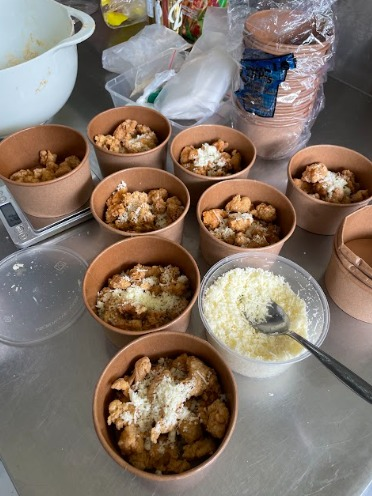

|
When you visit a supermarket you’ll find lots of snacks and drinks displayed on the shelves.
Nowadays, snacks and drinks are attractively packaged, convincing customers to buy them. However, if you look
at them closely, many of these items contain high levels of sugar, sodium, and often artificial food coloring.
Those ingredients are unhealthy, especially for young children. That’s why we decided to produce and sell some
healthy and nutritious food with higher quality for the Santa Ursula Jakarta Middle School Community. |

|


|
Fresh cow milk was the main ingredient for both yogurt and cheese. We began by heating the
milk to a certain temperature. When we made yogurt, 2 tablespoons of plain yogurt should be added and mixed
with milk until they were blended. Then the mixture was poured into a jar and closed tightly and it was
chilled in the refrigerator for less than a day. As for the cheese, vinegar was added into the milk to
separate the solid particles of the milk. After that, we can separate them by draining it using a cheesecloth
to take the potential cheese, then salt was added to give more flavor. We molded the cheese into whatever
shape we liked and covered it with aluminum foil, then chilled it in the refrigerator for at least 1 day. |
|
Next, for our chicken popcorn, lots of spices had to be used to make the dish tasty and
flavorful. This actually took quite a while to make, thanks to the marination process that had to be done the
night before cooking the chicken. The cubed chicken was marinated with egg and soy for a night. Then, once the
chicken was ready, we could mix the ingredients for the crispy skin. After that, we could start to coat the
chicken with an egg mixture first before coating it with a layer of the spices. We have to dip it in the egg
mixture first so that all the spices can form a thick layer around the chicken. Our trial was very successful,
so when the time came to make the chicken at school, we had no trouble at all. |
 |